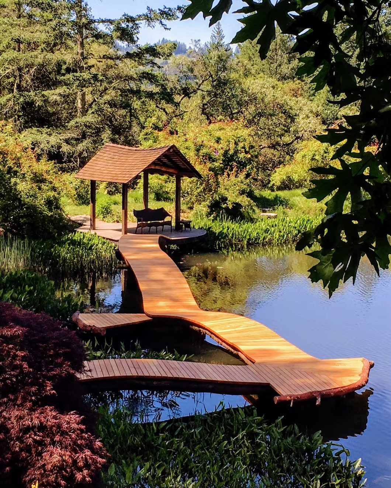
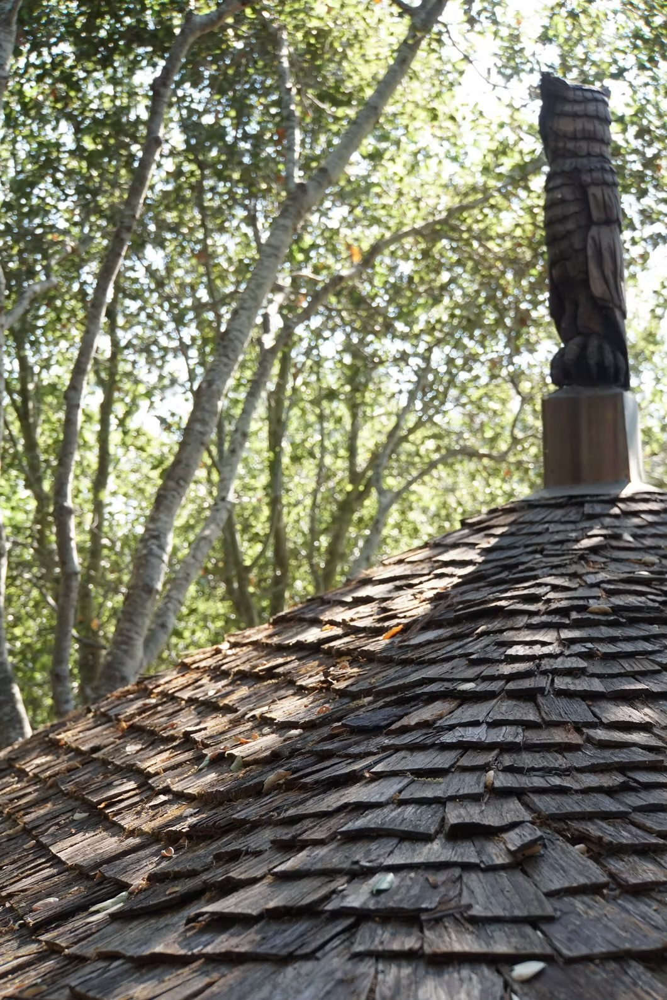
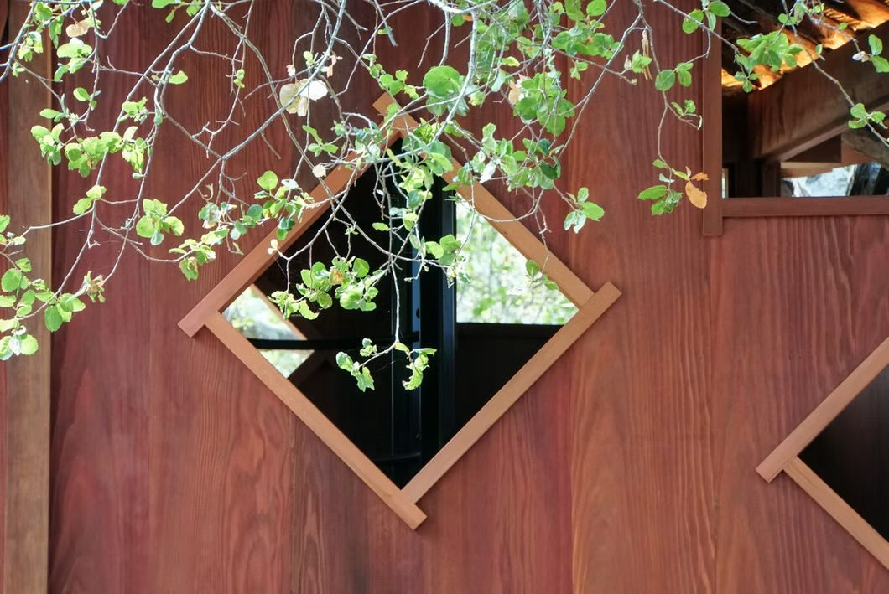

Treehouses, footbridges, furniture, sculpture and tiny homes. Creative projects of various scales, from abstract and conceptual to straightforward and functional.
Creative projects of various scales and techniques — from abstract conceptual to straightforward functional — with wood being the primary material used.

Projects from the portfolio. Tap any photo to view it larger.
Wood is the primary material. These are the kinds of projects I take on, and more.

Tucker Gorman Designs is a small design / build operation based in the Santa Cruz Mountains of California.
Projects range in scale and technique, from abstract and conceptual to straightforward and functional, with wood as the primary material.
One project was part of Tucker’s application to the Big Basin State Park art program. It is still in the works and will hopefully be finished and installed locally in the near future.
Tell me a little about what you want to build, where it will go, and your timeline. Feel free to email me.
TuckerGormanDesigns@gmail.com